이미지 한 장을 3D 코드 모델로: img2threejs
코딩 에이전트는 시킨 일을 대부분 해내지만, 혼자서는 못 하는 일이 아직 있어요. 영상은 그 빈틈을 메우는 GitHub 저장소 8개를 직접 써 보고 골랐어요. 도구마다 다루는 문제가 달라서, 문제별로 묶어 보면 아래처럼 다섯 갈래가 돼요. 이 문서의 섹션도 이 순서를 따라가요.
img2threejs: 사진 속 물건을 코드로 된 3D 모델로
첫 번째 도구는 사진 한 장을 받아 그 안의 물건을 Three.js 코드만으로 다시 만드는 스킬이에요. 영상은 이것이 GitHub 인기 저장소에도 올랐다고 소개해요. 아래 화면 왼쪽이 에이전트에게 준 헤드폰 사진(headphones.jpg)이고, 오른쪽이 만드는 중인 모델이에요. 아직 표면이 각지고 회색뿐이라 뼈대 단계인 걸 알 수 있어요.

완성된 모델은 랜딩 페이지에 그대로 들어가요. 'Hear the room go quiet.'라는 문구 옆에 헤드폰이 떠 있는 제품 페이지가 그 예예요. 방문자가 모델을 돌려 볼 수 있고, 스크롤에 맞춰 움직이게 할 수도 있어요.
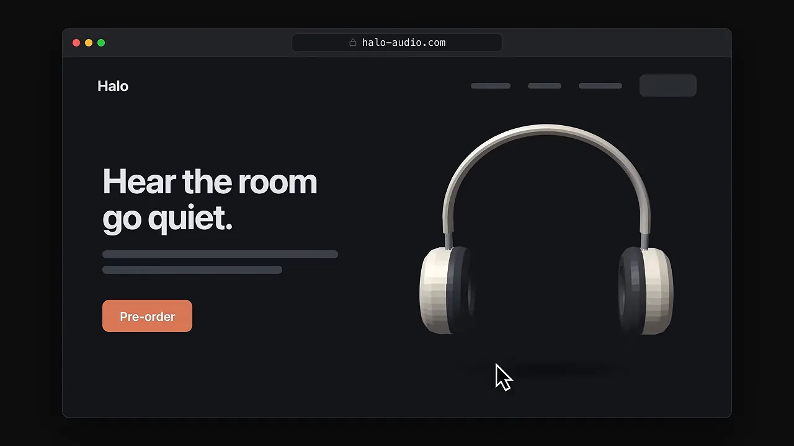
모델이 코드라서 고치기도 쉬워요. 3D 프로그램을 따로 배울 필요 없이 색을 바꾸거나 조명을 바꿔 달라고 말로 시키면 돼요. 아래 화면 오른쪽 패널에는 Headband, Ear cups, Cushions처럼 부품이 나뉘어 있고, Ear cups를 고르자 이어컵 색만 분홍빛으로 바뀌었어요.
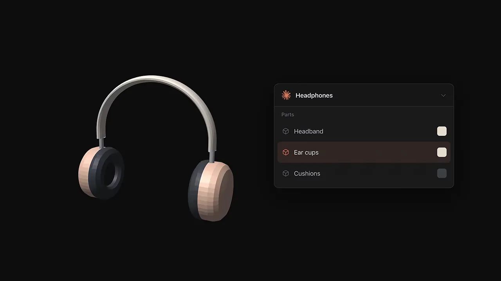
대신 오래 걸리고 토큰을 많이 써요
사용법은 이미지를 주고 img2threejs로 3D 모델을 만들라고 하는 게 전부예요. 에이전트는 단계마다 모델과 사진을 비교해 다른 점부터 고치고, 그다음에 세부를 더해요. 아래 터미널 기록이 그 과정을 보여 줘요. 위쪽 강조된 줄은 '그릴의 살이 14개인데 첫 시도에서는 3개라고 봤다'는 자기 수정이에요. 아래쪽에는 'Churned for 3h 4m 32s'라고 걸린 시간이 찍혀 있어요.

그렇게 만든 결과가 아래 G63 차량 모델이에요. 그릴과 엠블럼, 원형 램프까지 형태는 갖췄지만 차체 면은 평평하고 각져 있어요. 영상도 첫 결과가 원하는 만큼 정교하지 않을 수 있다고 말해요. 그럴 때는 특정 부분을 더 다듬어 달라고 계속 요청하면 데모 수준에 가까워져요.
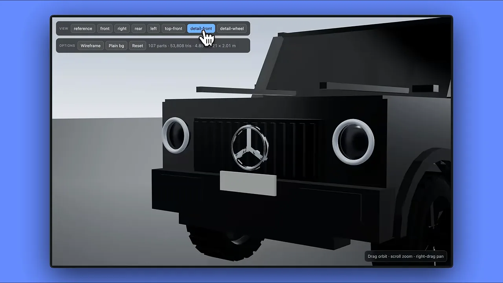
'다 됐어요'를 믿기 전에: Reticle과 Ouroboros
에이전트가 자주 하는 실수가 있어요. 일이 덜 끝났는데 끝났다고 말하는 거예요. 보통은 페이지가 뜨는지, 디자인이 맞는지까지만 보고 멈춰요. 아래 화면이 그 상황이에요. 위쪽 'Checked'에는 Page loads, Design matches 두 줄에만 초록 체크가 붙었어요. 아래 'Not checked'에 있는 결제 버튼, 주문 저장, 확인 메일은 아무도 확인하지 않았어요.
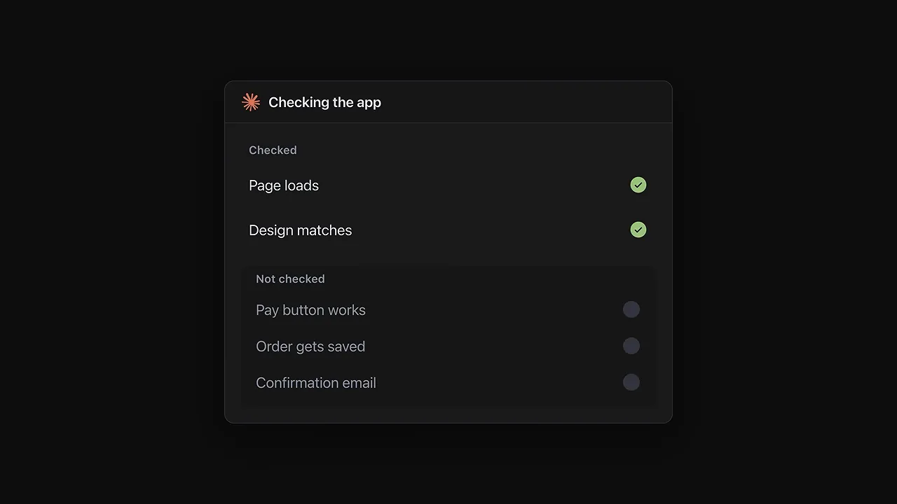
이런 실패를 잡으려면 에이전트가 브라우저 안에서 실제로 무슨 일이 일어나는지 볼 수 있어야 해요. 영상은 그 방법으로 도구 두 개를 소개해요. 하나는 다 만든 뒤에 확인하는 Reticle이고, 다른 하나는 만들기 전부터 계획을 세우는 Ouroboros예요.
Reticle: 앱을 직접 써 보고 결론을 내요
Reticle 저장소의 소개 문구가 문제를 잘 요약해요. 에이전트가 'Feature complete'라고 한 뒤 앱을 열면 겉보기엔 멀쩡한 페이지 밑에서 500 오류가 조용히 나고 있거나, 되던 흐름이 깨져 있거나, 실제 API(Application Programming Interface) 대신 가짜 데이터가 들어 있다는 거예요. Reticle은 스스로를 'AI가 쓴 코드의 교정자'라고 불러요.
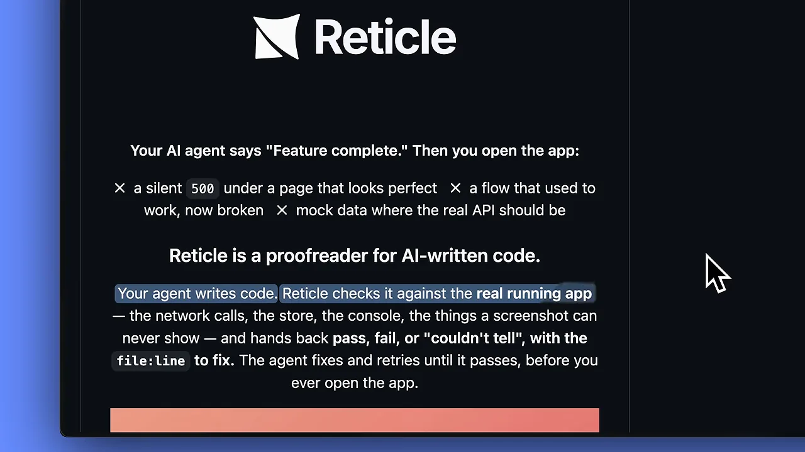
설치해 두면 프롬프트에서 따로 말하지 않아도, 앱을 만들 때마다 에이전트가 Reticle로 결과를 확인해요. 에이전트가 브라우저에서 앱을 열고 사람처럼 눌러 보면서, 앱 안에서 일어나는 일을 따라가요. 아래 그림은 Click Pay → Send order → Save order로 이어지는 흐름에서 Save order 단계가 빨갛게 표시되고 'Order wasn't saved'라는 원인이 붙은 모습이에요.
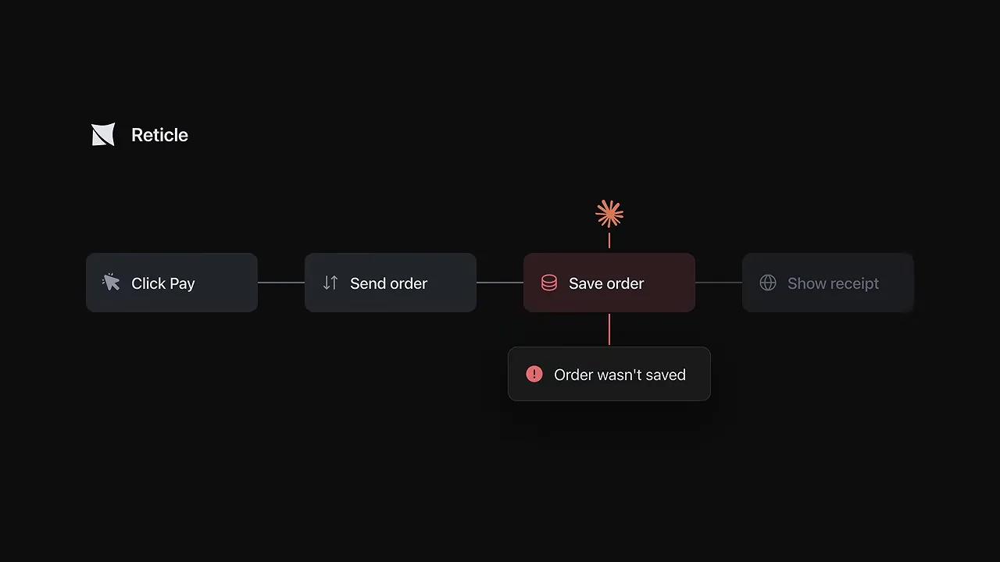
사용자가 앱을 직접 열면 구석에 Reticle 팝업이 떠요. 여기서 지난 검사 기록을 보고 무엇이 깨졌고 에이전트가 어떻게 고쳤는지 확인할 수 있어요. 아래 Impact 화면에는 '3 checks Reticle refused to pass'가 크게 적혀 있고, 그 아래 6 passed, 3 failed, 0 unknown이 나뉘어 있어요. 맨 아래 'WHAT BROKE'에는 실패 이유가 한 줄로 남아요.
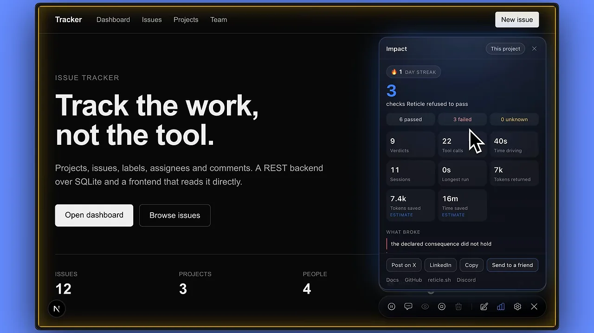
Ouroboros: 만들기 전에 스스로 인터뷰해요
앱이 어떻게 동작해야 하는지 자세히 말하지 않으면, 에이전트가 그 빈칸을 마음대로 채워요. Ouroboros는 만들기 전에 그 빈칸부터 메우고, 다 만든 뒤에는 결과를 검사해 문제를 에이전트에게 돌려보내요. 설치는 쓰는 에이전트에 맞는 설정 명령을 따르면 돼요. 터미널 명령 하나를 깔고, 설정이 그 명령을 에이전트와 이어 줘요. 아래 화면에서 저장소는 'GitHub Trending #4 Repository Of The Day' 배지를 달고 있고, macOS·Linux용 curl 명령과 Windows용 PowerShell 명령이 나란히 있어요.
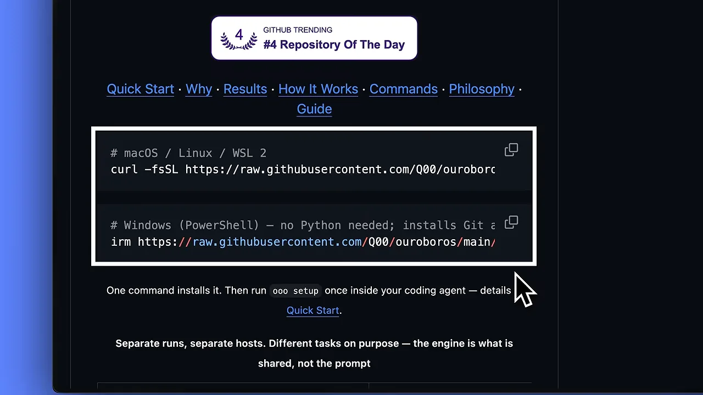
ooo setup을 한 번 실행하라고 안내해요. 영상 07:08에서 보기설정이 끝나면 만들 앱을 설명하고 Ouroboros를 쓰라고 하면 돼요. 그러면 스스로 인터뷰를 시작해요. 요청을 두고 질문을 만들고, 사용자가 이미 말한 것과 프로젝트에서 보이는 것으로 답해요. 아래 미용실 예약 앱 예시에서 '누가 예약하나요?'에는 '손님이 직접 예약해요'라고 답하고 근거를 user_goal로 달았어요. '예약은 어디에 저장하나요?'에는 '이미 프로젝트에 있는 Supabase'라고 답하고 근거를 repo_fact로 달았어요.
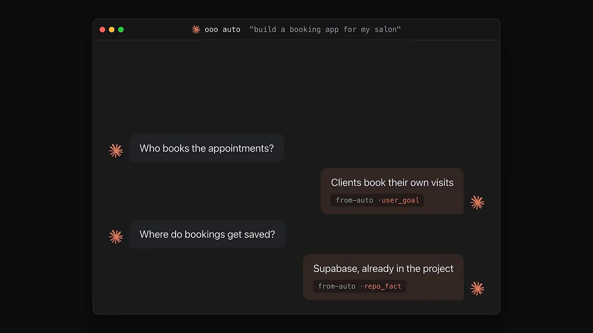
모든 걸 묻지는 않아요. 나중에 바꾸기 쉽고 요청 범위를 벗어나지 않는 작은 결정은 혼자 정하고, 앱이 해야 할 일을 바꿀 수 있는 결정만 멈추고 물어봐요. 혼자 정한 것은 가정으로 기록해 둬서 무엇이 결정됐는지 볼 수 있어요. 아래 화면의 'Prices in dollars', 'Staff set their own hours'가 그렇게 정한 가정이고, 오른쪽 Assumptions 문서로 모여요.
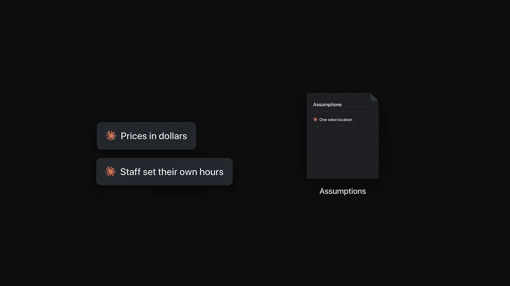
인터뷰 답은 완성된 앱이 해야 할 일을 적은 계획이 돼요. 그다음 흐름은 아래와 같아요. 영상이 특히 강조하는 점은, 앱을 만드는 에이전트가 받는 지시에는 검사를 어떻게 돌리는지도, 어떤 결과를 기대하는지도 들어 있지 않다는 거예요. 검사에 맞춰 답을 꾸며 내지 못하게 하려는 장치로 보여요.
flowchart LR
A["스스로 인터뷰"] --> B["계획"]
B --> C{"계획 검토"}
C -- "문제 있음" --> B
C -- "통과" --> D["앱 만들기"]
D --> E{"계획대로 되나 검사"}
E -- "안 되는 부분" --> F["그 부분만 고치기"]
F --> E
E -- "모두 통과" --> G["완료"]
진행 상황은 Ouroboros 대시보드에서 실시간으로 볼 수 있어요. 아래 화면은 '미용실 예약 사이트 만들기' 작업이 Running 상태이고, 시도(Attempts)는 5번 중 3번째, 검사(Checks)는 4개 중 2개를 통과한 모습이에요. 진척이 없거나 시도 횟수 한도에 닿으면 Ouroboros가 왜 멈췄는지 알려 줘요.
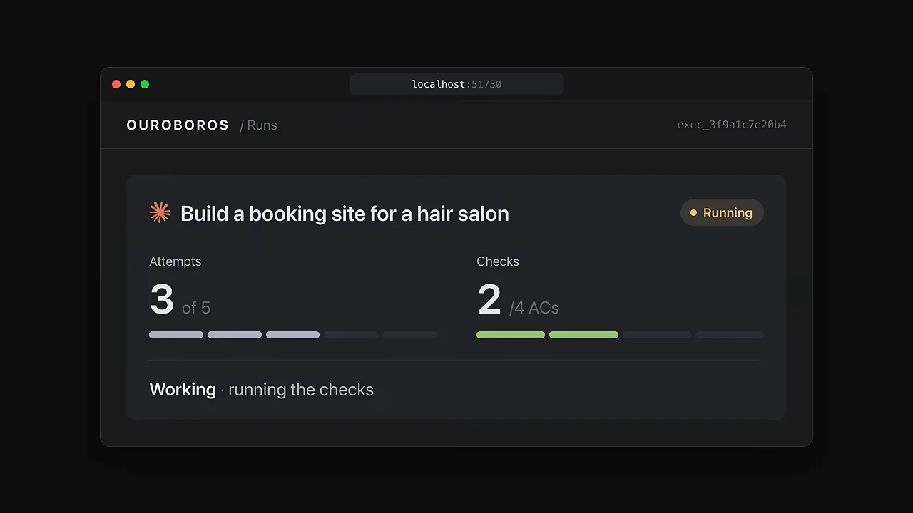
짧게 말하고 덜 읽게: Chisle
요즘 모델의 답변은 점점 길어지고 있어요. 작업을 마치고 남기는 요약이 특히 그래요. 영상은 Claude 모델에서 이 현상이 더 두드러진다고 봐요. 길기만 한 게 아니라 구조가 어색해서, 에이전트가 무슨 말을 하려는지 알아보기가 어려워요.
Chisle은 에이전트에게 말을 줄이고 작업에 필요 없는 코드는 쓰지 말라고 지시하는 도구예요. 목표는 불필요한 설명과 코드에 쓰는 토큰을 줄이는 거예요.
같은 질문, 1,506토큰과 602토큰
작성자는 테스트 결과도 공개했어요. 키를 누를 때마다 API를 호출하는 검색창에 디바운스를 넣어 달라는 같은 질문을 두 번 던졌어요. 아래 첫 화면 제목 줄이 Chisle 없이 받은 답이에요. 'bare agent: 142 lines, 1506 tokens'라고 적혀 있고, '흔한 접근법을 보여 드릴게요'로 시작해서 범용 useDebounce<T> 훅 파일을 새로 만들어요.
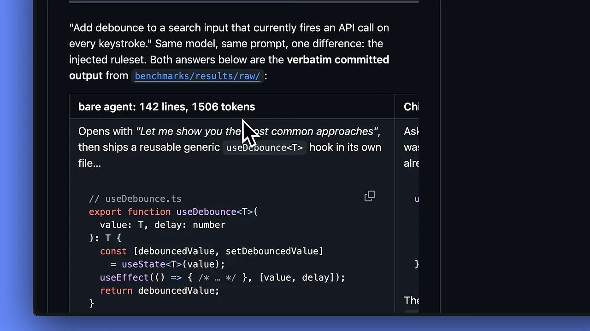
오른쪽 칸이 Chisle을 켠 답이에요. 'Chisle: 35 lines, 602 tokens'예요. 어떤 프레임워크를 쓰는지 먼저 묻고, 이미 있는 effect 안에 setTimeout만 넣어요. 새 파일도, 범용 코드도 없어요.
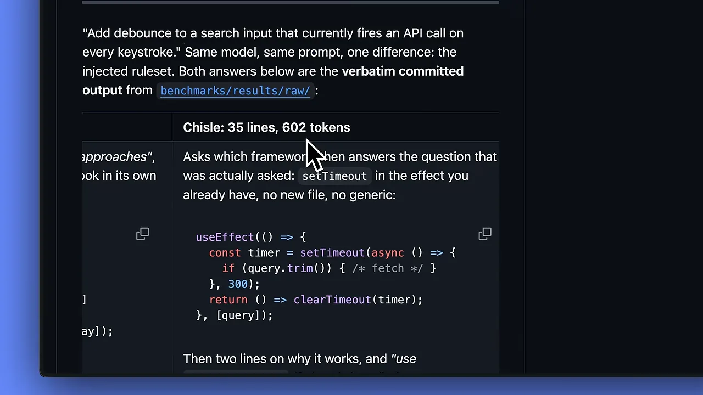
비슷한 일을 하는 caveman, ponytail과도 비교했어요. 아래 표는 도구 없는 모델을 100%로 놓고 20개 작업의 총 비용을 비교한 거예요. Chisle 줄의 total bill이 52%로 셋 중 가장 낮고, 평균 작업(69%)과 최악의 경우(173%), 오히려 늘어난 횟수(1/20)도 가장 적어요.

스킬 4개와 훅 3개
Chisle은 Claude Code 플러그인으로 설치해요. 설치하면 스킬 4개와 함께 훅이 들어와요. 훅은 세션의 정해진 시점에 자동으로 실행되는 명령이에요. Chisle이 까는 훅은 세 개예요. 세션이 시작될 때, 프롬프트를 보낼 때, 에이전트가 도구를 쓴 뒤에 하나씩 돌아요.
세 번째 훅이 Claude Code에서 얻는 덤이에요. 에이전트가 읽어야 할 양 자체를 줄여 줘요. 아래 터미널에서 테스트 48개를 돌린 출력 중간에 '[chisle: line repeated 8×]'라는 줄이 보여요. 같은 줄 8개를 한 줄로 접은 거예요. 이렇게 하면 컨텍스트가 필요 없는 텍스트로 차지 않고, 읽을 양이 줄어 토큰과 세션 비용도 줄어요.
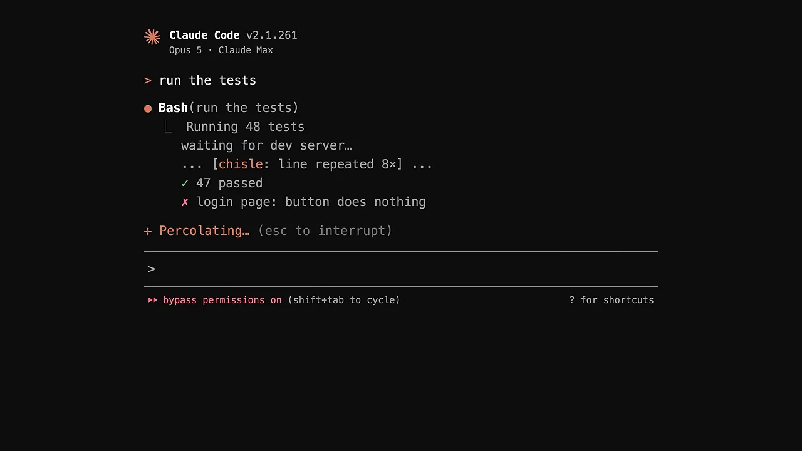
스킬을 깔고 나면 어떤 일을 시켜도 요약이 훨씬 짧고 직접적인 말로 돌아와요. 영상은 대체로 무엇을 했는지, 주요 변경, 건너뛴 것 순서로 정리된다고 설명해요. 아래 예시는 단 두 줄이에요. '문의 폼이 메시지를 보내지 않고 있었다. 고쳤고, 이제 메시지가 받은편지함에 도착한다.'
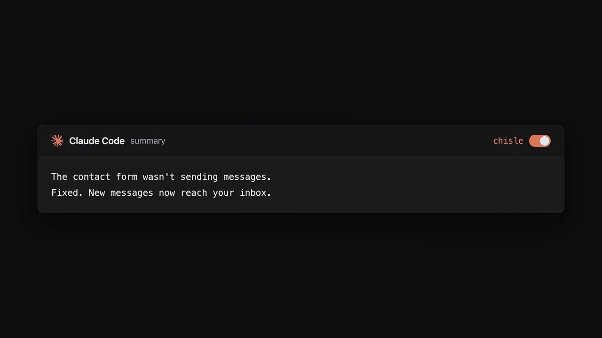
맞는 디자인 스킬 고르기: UI Skills와 SwiftUI Skills
디자인을 좋게 만들어 주는 스킬은 많아요. 스킬마다 자기 디자인 원칙이 있는데, 바로 그게 문제예요. 너무 많아서 고르기 어렵고, 내 디자인에 맞는 스타일이 무엇인지 찾는 데 꽤 품이 들어요. 아래 화면처럼 swiss-design, minimalist-ui, industrial-brutalist-ui, apple-design, daisyui는 글꼴과 색, 버튼 모양이 저마다 달라요.
UI Skills: 맞는 스킬을 에이전트가 찾아와요
UI Skills는 여러 작성자의 디자인 스킬을 모아 둔 라이브러리예요. 에이전트가 이 안을 검색해서 원하는 디자인에 가장 잘 맞는 스킬을 가져와요. 아래 화면 왼쪽에서 'minimal'로 검색하자 minimalist-ui가 골라졌고, 오른쪽 Claude Code는 'build a minimal booking page' 요청을 받아 list_skills와 get_skill 두 도구를 써요.

UI Skills는 MCP(Model Context Protocol)와 터미널에서 돌리는 CLI(Command-Line Interface) 두 가지로 쓸 수 있어요. 아래 공식 사이트의 'Agent, start here.' 아래에 CLI와 MCP 카드가 나란히 있어요. 둘의 차이는 영상이 이렇게 정리해요.
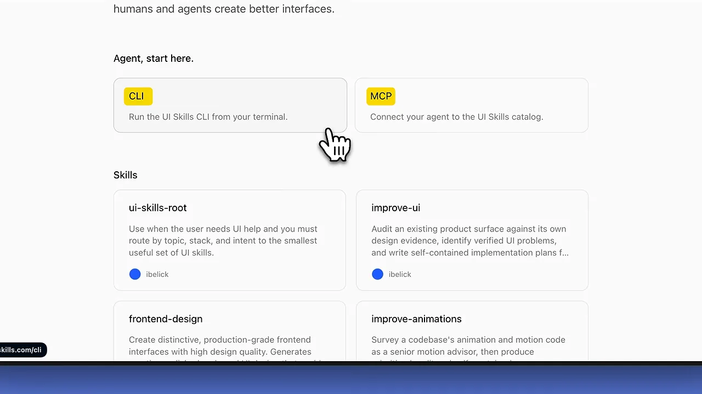
| 방식 | 에이전트가 언제 쓰나요 | 따로 할 일 |
|---|---|---|
| MCP | 도구가 세션 내내 떠 있어서 알아서 써요 | MCP 연결만 하면 돼요 |
| CLI | 쓰라고 알려 줘야 써요 | 프롬프트나 프로젝트 지침에 언제 쓸지 적어요 |
영상은 MCP를 골랐어요. 연결하고 나면 에이전트의 MCP 도구 목록에 UI Skills가 보여요. 그다음 원하는 디자인을 말하면서 UI Skills를 쓰라고 하면 돼요. 아래 그림처럼 Claude Code가 대화 중에 list_skills와 get_skill로 UI Skills에 묻고 답을 받아요.
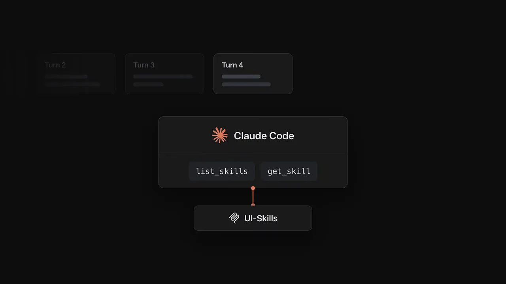
에이전트는 먼저 요청에 맞는 스킬을 라이브러리에서 찾아요. 아래 터미널에서 강조된 부분이 그 출처인 ui-skills.com/skills/registry.json이고, 바로 아래 "count": 298이 찾은 목록의 크기예요. 그 아래로 mengto/landing-page, mengto/tailwindcss 같은 후보 경로가 이어져요.
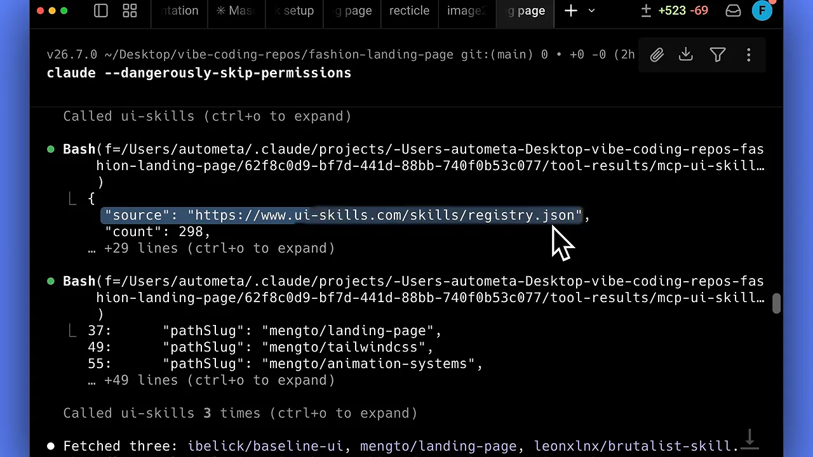
후보 중에서 관련 있는 것만 남기고, 그 지침을 가져와 사이트를 만들 때 써요. 아래 화면의 'Fetched three:' 줄에 최종으로 고른 세 개가 있어요. ibelick/baseline-ui, mengto/landing-page, leonxlnx/brutalist-skill이에요. 에이전트는 이 지침이 자기가 만든 것의 실제 문제를 짚는다며, 그 지침에 맞춰 다시 쓰겠다고 하고 app/globals.css를 고쳐요.
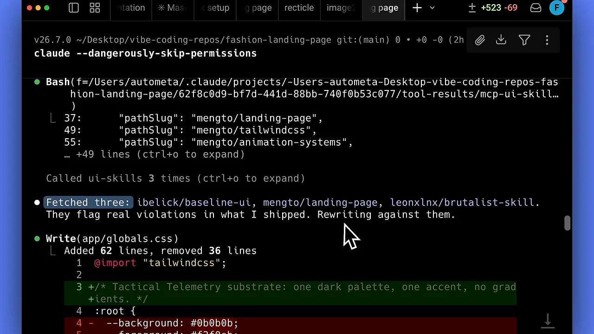
SwiftUI Skills: iPhone 앱을 Apple 방식대로
디자인 스킬은 많아도 iPhone 앱의 모양과 동작을 다루는 건 적어요. 에이전트에게 iPhone 앱을 시키면 Liquid Glass를 흉내 내려고 흐림 효과와 배경을 덧대요. 결과는 진짜 Liquid Glass보다 그냥 투명한 버튼에 가까운데, 에이전트는 똑같다고 말해요. Apple이 이어서 내놓는 기능 변화도 따라가지 못해요. 아래 두 화면을 보면 차이가 보여요. 왼쪽은 에이전트가 'Done, matches Liquid Glass'라고 한 결과이고, 오른쪽이 실제 Liquid Glass예요. 아래쪽 탭 바를 비교해 보면 돼요.

SwiftUI Skills 저장소는 Apple의 화면 구성 체계인 SwiftUI로 화면을 제대로 만드는 지침을 담고 있고, Apple의 최근 변화에 맞춰 계속 업데이트돼요. 스킬은 두 개예요. 아래 README 표에서 위쪽 swiftui-liquid-glass는 iOS 26 이상의 Liquid Glass를 네이티브 API로 구현하고 검토하는 법, 흔한 패턴과 함정을 다뤄요. 아래쪽 swiftui-iphone-duo는 영상이 최근 나온 넓은 화면의 새 iPhone이라고 소개한 'iPhone Duo'에 맞춰 크기별 레이아웃을 짜는 법을 다뤄요.
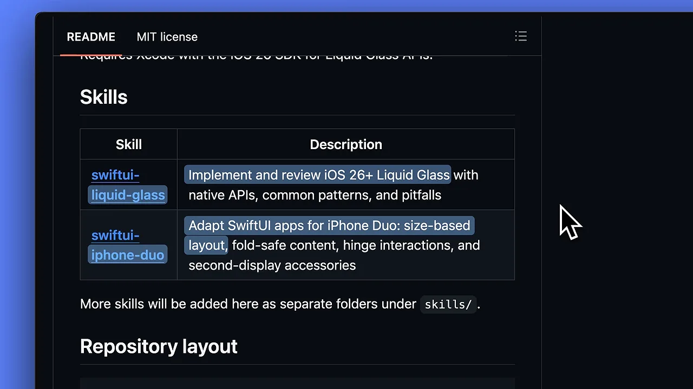
필요한 스킬을 설치한 다음 앱을 만들 때 그 지침을 따르라고 하면 돼요. 그러면 에이전트가 Apple의 실제 패턴을 써서, 혼자 만들 때보다 훨씬 네이티브 앱에 가까운 결과가 나와요.
스킬과 코드 점검하기: Caliper와 anti-slop
스킬을 많이 만들수록 어느 스킬이 아직 에이전트에게 도움이 되는지 알기 어려워요. 모델이 업데이트되면 더 어려워져요. 새 모델은 스킬이 시키는 일을 지침 없이도 이미 할 수 있거든요. 그러면 예전엔 쓸모 있던 스킬이 품질은 못 올리고 토큰 비용만 늘리게 돼요.
Claude Code의 새 /skill-doctor 명령이 이걸 확인해 준다고 생각할 수 있어요. 아래 화면처럼 이 명령은 스킬마다 컨텍스트를 얼마나 차지하는지(context), 최근 7일 토큰, 사용 횟수, 마지막 사용일을 보여 줘요. 맨 아래에는 '2 skills loaded but never invoked'라고, 불러오기만 하고 한 번도 안 쓴 스킬 두 개를 알려 줘요.
Caliper: 스킬을 켜고 끄고 비교해요
Caliper는 내가 만든 스킬이 원래 목적대로 동작하는지, 작업에 실제로 영향을 주는지 시험하는 도구예요. 에이전트의 작업을 스킬이 있을 때와 없을 때로 나눠 비교해서, 그 지침이 정말 도움이 되는지 봐요. 아래는 edonadei/caliper 저장소예요.
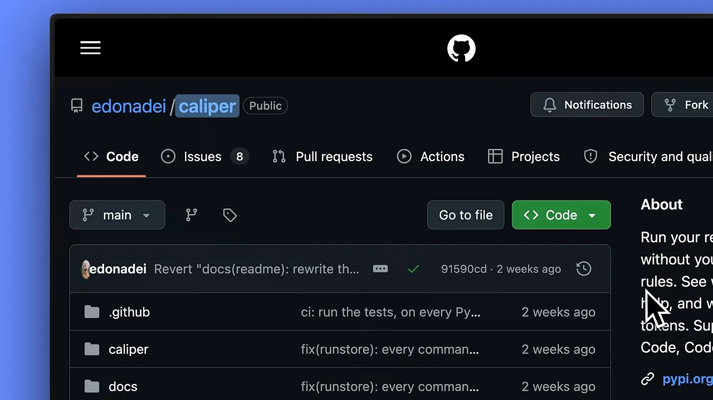
두 스킬은 역할이 나뉘어요. grill 스킬은 내 스킬이 무엇을 해야 하는지 사용자를 인터뷰해서, 테스트가 의도를 제대로 반영하게 해요. evaluate 스킬은 eval이라 부르는 테스트를 만들고 실행해요. 테스트 하나는 프롬프트와, 그 프롬프트에서 기대하는 결과 설명으로 이뤄져요. 아래 테스트 정의 파일(.yaml)에서 prompt: 칸에는 '복식부기 도구의 랜딩 페이지를 HTML과 CSS 한 파일로 만들어라'는 지시가, expect: 칸에는 '디자인 방향을 먼저 밝히고 시각적 참고를 하나만 정한다'는 기대 결과가 적혀 있어요.
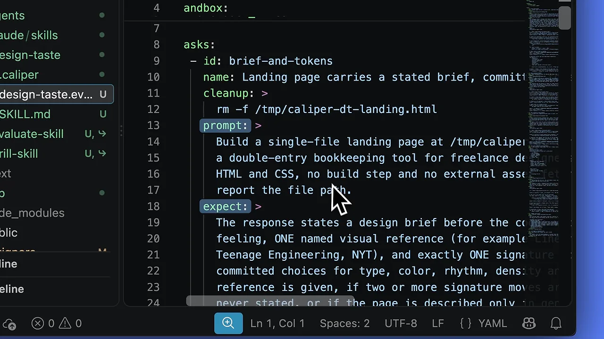
.caliper 폴더에 남아 나중에 다시 볼 수 있어요. 영상 10:40에서 보기쓰는 법은 만든 스킬에 Caliper를 써 달라고 하는 게 전부예요. 아래 화면에서 'run caliper against the design skill'이라고 하자, 에이전트가 caliper 설치를 확인하고 아직 평가 결과가 없다는 걸 본 뒤 evaluate 스킬을 불러와요. 테스트를 쓰다 막히면 grill 스킬을 불러 사용자에게 물어봐요.
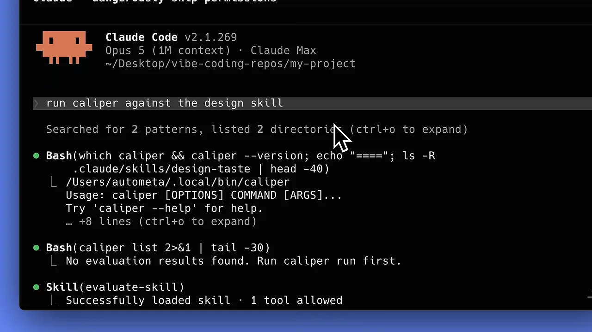
테스트가 준비되면 여러 프롬프트로 여러 번 돌려요. 일부는 스킬을 켜고, 일부는 끄고 돌려서 결과를 비교해요.
flowchart LR T["테스트 (프롬프트 + 기대 결과)"] --> A["스킬 켜고 여러 번 실행"] T --> B["스킬 끄고 여러 번 실행"] A --> R["보고서"] B --> R R --> R1["어떤 일에서 믿을 만한가"] R --> R2["어디가 아직 부족한가"] R --> R3["늘어난 토큰만큼 값어치가 있나"]
비교 대상은 스킬만이 아니에요. Caliper는 MCP 서버나 설정에 있는 다른 지침도 같은 방식으로 비교할 수 있어요. 아래 화면에서 landing-page는 skill, figma는 MCP server, CLAUDE.md는 instructions로 표시돼 있고, CLAUDE.md 줄의 스위치를 켜고 끄며 비교하는 모습이에요.
anti-slop: 에이전트의 나쁜 코드 습관을 잡아요
anti-slop은 에이전트가 코드를 쓸 때 자주 보이는 나쁜 패턴을 없애려고 만든 도구예요. 정해진 코딩 실수를 찾아 에이전트에게 알려 주니, 사용자가 코드를 직접 읽지 않아도 고쳐져요. 아래 README 첫 줄에 강조된 것처럼, 근거가 약하거나 의미 없는 TypeScript·JavaScript 패턴을 거부하는 '취향이 분명한' 규칙 모음이에요.

규칙은 두 종류예요. 아래 화면 왼쪽 'Slows the app'은 앱을 느리게 만드는 불필요한 작업을 잡는 규칙이고, 예로 '한 목록을 두 번 훑기(Two passes over one list)'가 있어요. 오른쪽 'How he writes code'는 작성자가 선호하는 코드 스타일을 반영한 규칙이에요.
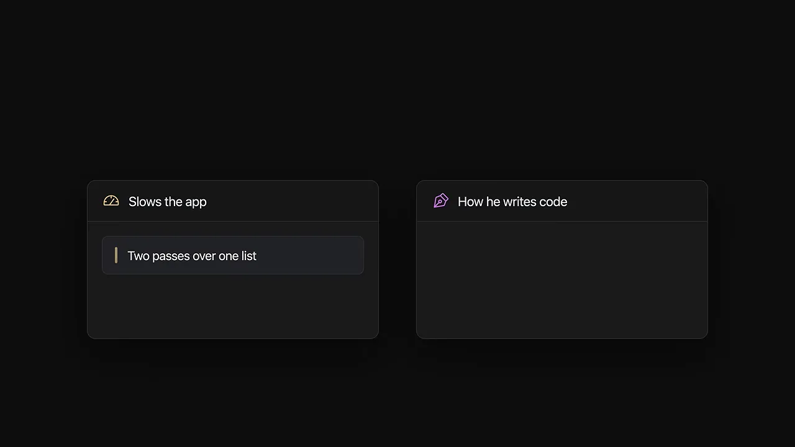
저장소의 안내대로 설치해 두면, 에이전트에게 무슨 일을 시키든 작업마다 이 검사를 돌리고 걸린 문제를 고쳐요. 작업을 다 마친 뒤에 최종 리뷰를 따로 시킬 수도 있어요. 아래 화면에서 가격 페이지, 가입 폼, 다크 모드 세 작업이 Done으로 끝난 뒤 'run a final review'를 입력하자, Home page부터 Dark mode까지 네 영역이 anti-slop 최종 리뷰를 기다리고 있어요.
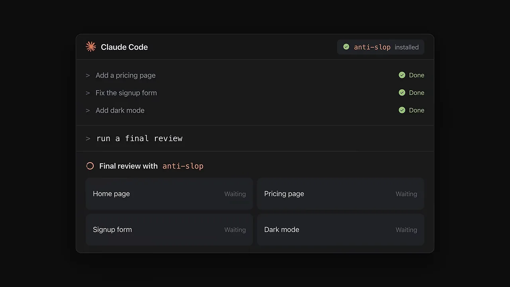